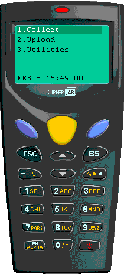
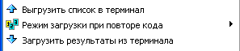

- Терминал сбора данных (сокращенно ТСД) -
портативный наладонный компьютер со сканером штрихкода, в который
загружается список товаров переучета, затем с его помощью сканируются
штрихкоды товаров на полках и пользователем вводится фактическое количество с
помощью его клавиатуры. Очень удобное устройство, позволяющее в несколько раз
ускорится по сравнению с проведением переучета при помощи пустографок вручную.
- Кроме переучета, с его помощью возможно
осуществлять автоматизированный ввод приходных накладных (см.соответствующий
раздел справки "Приходная накладная - Загрузка из терминала сбора
данных").
- Для товаров не имеющих штрихкода, например,
весовых, можно вводить короткий товарный код (зависит от прошивки текущей
задачи в терминале, см.раздел справки "Настройки - вкладка Терминал сбора
данных" - там же активируется собственно сам модуль работы с ТСД).
- 
- 
- Выгрузить список в терминал - когда записи
остатков товаров в табличную часть отобраны, терминал готов к работе в
коммуникационно-зарядной подставке, выберите данный пункт меню и следуйте
появляющимся на экране инструкциям. После окончания загрузки в терминал новую
ведомость переучета необходимо сохранить без корректировки
остатков товаров.
- Режим загрузки при повторе кода - меню в
котором устанавливается правило, что делать, если штрихкод или код, вносимый
автоматически из текстового списка или сканируемый сканером штрихкода или
загружаемый из терминала сбора данный уже имеет проставленное
фактическое количество. Доступны 3 варианта:

1. Спрашивать - каждый раз при повторе будет
появляться диалоговое окно с вопросом, что делать? добавить к текущему
количеству или заменить текущее количество на вновь загруженное в случае
терминала или 1шт в случае сканирования штрихкода
сканером.
2. Добавлять - при повторе кода к уже
проставленному "факту" будет прибавлено вновь загруженное количество в
случае терминала или 1шт в случае сканирования штрихкода
сканером.
3. Заменять - старый "факт" будет удален, а
вместо него будет вписано вновь загруженное количество в случае
терминала или 1шт в случае сканирования штрихкода
сканером.
Наиболее часто используется вариант
"Добавлять". Это наиболее удобно, т.к. чаще всего повторы вызваны тем, что
один и тот же товар находится одновременно на разных полках в
магазине.
- Загрузить результаты из терминала - после
подсчета фактических остатков при помощи ТСД, установите его в подставку и
выберите данный пункт меню. Следуйте появляющимся на экране инструкциям. Если
штрихкод/код повторяется, действует выбранное правило меню "Режим загрузки при
повторе кода". После окончания загрузки терминал предложит удалить в нем
собранные результаты переучета.
- Проверьте загруженные фактические данные остатков
и если вас они устраивают - можно сохранять переучет с корректировкой
остатков, иначе - если вы хотите еще дорабатывать результаты - сохраняйте без
корректировки.